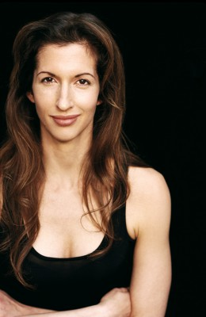

#9509 Kissing Jessica
Alternativ: Kissing Jessica Stein

 IMDB-Wertung: 6.6 / 10
IMDB-Wertung: 6.6 / 10  Metascore: 0
Metascore: 0 
28 Jahre alt, ohne Anhang und erfolgreich im Job: Zeitungsredakteurin Jessica Stein steht mitten im Fegefeuer des modernen Singletums. Als ihr Bruder Dan verkündet, dass er heiraten will, brechen vor lauter Torschlusspanik sämtliche Dämme bei der Karrierefrau. Sollte denn da draußen wirklich niemand sein, der sich für sie interessiert und den sie lieben kann? In ihrer Verzweifelung antwortet sie auf eine Kontaktanzeige: allerdings unter der Rubrik "Frau sucht Frau"! Und sie trifft auf Helen, eine Galeristin, die ihre Männerbekanntschaften zurzeit eher langweilig findet und etwas Neues sucht.
Jahr: 2001
Dauer: 96 Minuten
FSK:
Land: USA Studio: Fox Searchlight PicturesTonspuren: DD2.0 - ,
Untertitel:
Auflösung: 1080p (1920x1040) Größe: 6973 MB
Genre: Drama, Komödie, Liebe
Regisseur: Charles Herman-Wurmfeld
Drehbuch: Heather Juergensen, Jennifer Westfeldt
Soundtrack: Marcelo Zarvos
Darsteller:
- Jennifer Westfeldt als Jessica Stein
 Tovah Feldshuh als Judy Stein
Tovah Feldshuh als Judy Stein David Aaron Baker als Dan Stein
David Aaron Baker als Dan Stein- Jennifer Carta als Rachel - Dan's Fiancée
- Ben Weber als Larry
 Brian Stepanek als Peter
Brian Stepanek als Peter Jackie Hoffman als Joan
Jackie Hoffman als Joan- John Cariani als Chuck
 Scott Cohen als Josh Meyers
Scott Cohen als Josh Meyers Kevin Sussman als Calculator Guy
Kevin Sussman als Calculator Guy- Jim J. Bullock als Not-Yet-Out Gay Guy
- Heather Juergensen als Helen Cooper
-  Alysia Reiner als Schuller Gallery Artist
- Carson Elrod als Sebastian
- Michael Mastro als Martin
 Tibor Feldman als Roland
Tibor Feldman als Roland- Michael Showalter als Stephen
 Michael Ealy als Greg
Michael Ealy als Greg- Naomi Scott als Seductive Woman at Gallery
 Jon Hamm als Charles
Jon Hamm als Charles- Julie Lauren als Josh's Date
 Jimmy Palumbo als Cheesy Pick-up Guy #1
Jimmy Palumbo als Cheesy Pick-up Guy #1 Idina Menzel als Bridesmaid
Idina Menzel als Bridesmaid- Amy Wilson als Bookstore Saleswoman
 Ilana Levine als Helen's New Girlfriend
Ilana Levine als Helen's New Girlfriend- Dalit Berkowitz als Barfly (uncredited)
- Esther Wurmfeld als Grandma Esther
- Hillel Friedman als Rabbi
- Ben Feldman als Himself
- Robert Ari als Sidney Stein
- Nick Corley als Howard
- Christopher Berger als Malaprops Guy
- Hayden Adams als Weird Smooth Guy
- Allen Fitzpatrick als Matthew
- Thomas L. Bolster als Cheesy Pick-up Guy #2
 Vinny Vella als Cab Driver
Vinny Vella als Cab Driver- Peter Hirsch als Stanley
- Adele Reichman als Grandma Interrogating Helen
Datei: X:\2001\Kissing Jessica (2001, FSK, 1920x1040).mkv seit 05.09.2018
Festplatte: HD 1996-2002
 Es gibt insgesamt 102 Filme in der Gruppe '2001'
Es gibt insgesamt 102 Filme in der Gruppe '2001'